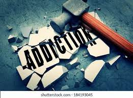
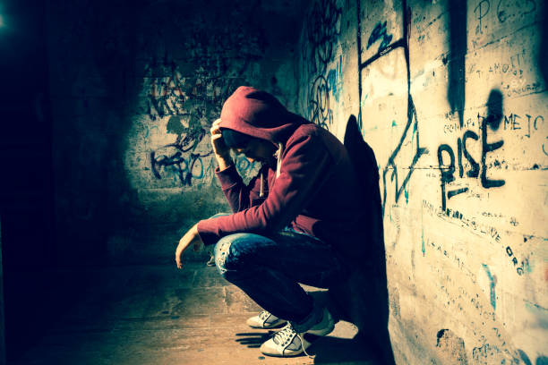

A one stop place of information for anyone struggling with addiction disorders. Let's end the stigma behind addiction!

My Story
I was born and raised into a close family. My parents were divorced, but both parents were in my life. They were very supportive. I didn't do well in school. I never felt comfortable in my own skin. I started smoking cigarettes and Marijuana when I was 14. I began drinking when I was 16. I immediately for once in my life felt comfortable and like I belonged. I manipulated my way into graduating high school. Manipulation was a skill I learned early in age and it came in handy throuhout my years. I got a job as a waitress. During this time I began drinking heavily, sniffing cocaine and eventually smoking crack. I decided I didn't want to be a waitress for the rest of my life so I went to Cosmetology school. While in school, I started experimenting with pills. Mainly opiates and ecstasy. I became a daily user of opioid pills. Learning I had a physical dependancy, I went to my first detox. I felt so ashamed. I went to detox, a css, and meetings when I came home. It was all a lie. I was still using while telling everyone I was clean. I started getting into M.A.T.and using on top of it. I began to use intravenous drugs, mainly heroin and cocaine. Plenty more detoxes as well as being sectioned. I was a mess. Stealing from everyone in my family and any store. I was being arrested all the time. At one point I was clean from using drugs but started drinking heavily. I gave myself pancreatitis twice. On my way home from one of my trips to detox, I was in a horrible car accident. I was ejected 150ft. from a rolling car. I was rushed to trauma surgery with numerous injuries. upon awakening from a surgery, I learned my boyfriend was ejected as well but killed on impact. I had alcohol in my system so I was charged with vehicular homocide,dui,and negligence. Something had to change. I met a woman who brought me to my first A.A meeting. I instantly felt welcomed. It is there that I met my best friend. I had some relapses but got a sponsor and did some step work. My life hasn't been the same since. Currently I am serving one year (mandatory) and one year suspended sentence. I'm o.k. with that though. I went to jail a free woman. "Rock bottom became the solid foundation on which I rebuilt my life"
"Recovery is not for people who need it. It's for people who want it."
Addiction Awareness
Resource Guide
Mental Health
*Addiction is a brain disorder characterized by compulsive engagement in rewarding stimuli despite adverse consequences*

*Mental Health:
BHN(Behavioral Health Network)
www.BHNINC.org
Locations: 110 Maple St. (Springfield, MA)
395 Liberty St. (Springfield, MA)
21 Kenwood St. (Springfield, MA)
Crisis hotline: (413)733-6661
To schedule an appointment:(413)246-9675
*BHN also noffers inpatient and outpatient
addiction services.
*Detoxes:
Sisters of Providence
Providence Hospital(inpatient and Dual diagnosis)
www.Mercycares.com
Location: 1233 Main St. (Holyoke, MA)
Phone: (413)536-5111 x2984
Intake: (413)536-5111
Carlson Center(inpatient)
471 Chestnut St. Springfield, MA
(413)733-1423
Sloan Clinic
(413)733-1423
Adcare Outpatient facility
www.adcare.com
117 Park Ave. West Springfield, MA
THIS PLACE SAVED ME
co-occuring disorder groups,I.O.P,Behavioral therapy.
Detox: (866)899-5511
*SHELTERS
Springfield Rescue Mission
110 Mill St. Springfield, MA
(413)732-0808
www.springfieldrescuemission.org
Friends of the Homeless
755 Worthington St. Springfield, MA
(413)732-3069
Christina's House for Women and Children
www.christinashouse.org
YWCA
1 Clough St. Springfield MA.
(413)732-3121
*OPEN PANTRY
Open Pantry
(413)737-53W54
287 State St. Springfield MA 01101
opcs@openpantry.org
EMERGENCY FOOD PANTRY
2460 Main St Springfield, MA
*Medically Assisted Treatment
*This is a category designed for harm reduction only. I personally have been on Suboxone and completed a Methadone Program. I must say that
when a Methadone program is completed the correct way, I experienced ABSOLUTELY
NO withdrawal symptoms whatsoever. I also was only on Methadone for about one year.*
Springfield CTC (Comprehensive Treatment Center)
www.SpringfieldCTC.com
511 Columbus Ave Springfield MA 01105
(855)900-8462 or(413)923-6747
Methadone Program
227 Mill St Springfield MA 01108
Healthcare Resource Center
628 Center ST Chicopee MA
(413)746-0051
Right Choice Health Group
125 Liberty ST #205
(413)271-7136
SaVida Health
West Springfield MA 01089
*No Methadone
Only Suboxone or Vivitrol
Clean Slate
900 Memorial Ave West Springfield MA 01089
(413)788-0100
Phoenix House
www.PhoenixHouse.org
5 Madison Ave
(888)671-9392
*Medically Assisted Treatment Options
Methadone
Methadone is a synthetic opiopid maintenence therapy in opioid dependance. While starting doses may be adjusted based on the amount of opioids reportedlyused, most clinical guidlines suggest doses start low(e.g.doses not exceeding 40mg daily) and are increments gradually.
Suboxone
Suboxone(buprenorphine/naloxone) is used for medication-awssisted therapy(MAT)for opioid addiction. Suboxone works by tightly binding to the same receptors in the brain as other opiates, such as, heroin, morphinge, oxycodone. By doing so, it blunts intoxication with these other drugs, it prevents cravings, and it allows many people to traansition back from a life of relative normalcy and safety.
Vivitrol
Vivitrol(naltrexone) blocks the effects of opioids such as heroin or opioid pain medications. DO NOT try to overcome this blocking effect by taking larger amounts of opioids-this can lead to serious injury, coma, death. Vivitrol is a prescription injectable medicine used to: treat alcohol dependancies. You should stop drinking before starting Vivitrol. Vivitrol also prevents relapse to opioid dependancy after opioid detoxification.
Chris Herren
I had a chance to see Chris Herren live and he has an amazing message to share. I could relate a lot to his story.
"You have to expect things of yourself before you can do them"
-Michael Jordan
If you have any questions, please ask away. I have a lot of personal experience with addiction disorder.
*Disclaimer: Let it be noted I am not a medical professional. What I am sharing are personal experiences only. There are numerous ways to get help. I encourage you to find out what works for you.
"Don't hate the addict, hate the disease.
Don't hate person, hate the behavior.
If it's hard to watch it, imagine how hard it must be to live it."